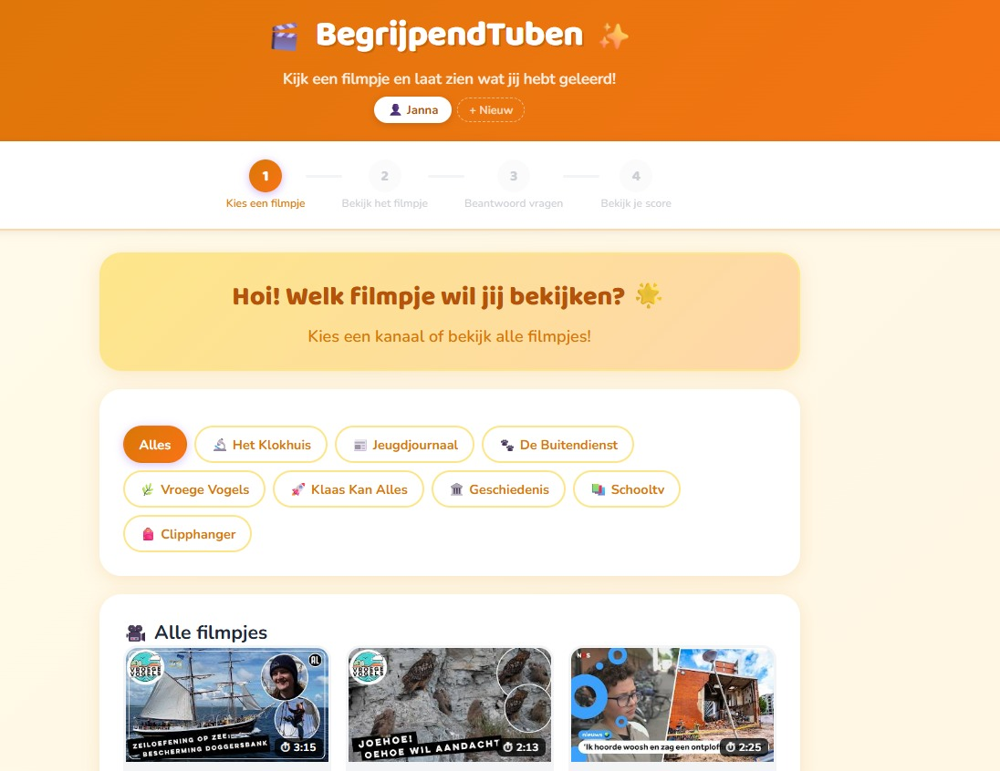

Begrijpend Tuben
Begrijpend lezen 2.0
Begrijpend lezen voor de YouTube-generatie. In plaats van een lap tekst krijgen leerlingen een korte clip, en daarna de vragen — zelfde vaardigheid, ander medium. Een Cloudflare-gehoste leeromgeving die docenten kunnen inzetten op de momenten dat een tekst voor deze klas toch echt geen optie is.
begrijpendtuben.nl →